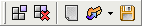

Ant Renamer can store and retrieve predefined lists of actions, called here "batches". They can be manager from the Actions page.
In addition to the Files toolbar which is always visible, a toolbar to manage these batch files is displayed:

Here are the commands:
These batch files can be used for combining multiple actions in one renaming process. They can be saved for a future use, or to use them from command-line.
They are stored as XML files, but they have a ".arb" extension (meaning "Ant Renamer Batch").
The list of current planned actions is displayed in the bottom panel, called "Batch contents". If it is not visible, you can show it by clicking on the checkbox at the left of its title.
You can move the items up and down in the list by drag & drop or using the four additionnal icons that appear in the toolbar when the batch panel is visible.
After having been added, an item cannot be modified. You have to remove it, redefine the parameters and add it again for that.